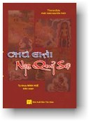

|  |
THERAVĀDA Chú giải Ngạ quỷ sự Dịch từ Pāli sang Anh ngữ:
PETER MASEFIELD Ấn bản 2007
|
|
Lưu ý: Ðọc với phông chữ VU Times (Viet-Pali Unicode) |
-ooOoo- LỜI GIỚI THIỆU CỦA DỊCH GIẢ Kính bạch chư Ðại Ðức Tăng, Tập chú giải Ngạ quỷ sự này được khởi dịch vào khoảng sau mùa Dâng Y năm vừa rồi và hoàn mãn vào ngày 02, tháng 02, năm 1994. Qua bộ chú giải này, chúng tôi có một vài nhận xét như sau: Những chúng sanh nào trong cõi người mà chưa chứng đắc các tầng thiền, nghĩa là tâm vẫn còn bị chi phối bởi ngũ dục: Ðối với những người có Ðức tin trong chánh Pháp thường gieo tạo nhiều việc phước như bố thí, trì giới v.v..., nhưng đôi khi vẫn còn phạm phải chút ít các nghiệp về thân, khẩu và ý; Do đó, sau khi chết đều tái sanh trong cõi Dục. Nếu vào lúc lâm chung mà thiện nghiệp được tích lũy mạnh hơn sanh lên trong tâm thời sẽ được sanh về một trong sáu tầng trời Dục giới hay cõi nhân loại. Tuy nhiên, nếu có ác nghiệp nào đó đã làm trong quá khứ sanh lên trong tâm vào lúc lâm chung thời người ấy phải tái sanh trong bốn khổ cảnh: Hoặc là Địa ngục, Súc sanh, A-tu-la, hoặc là sanh làm Ngạ quỷ. Nếu ác nghiệp ấy quá nặng nề, thời phải trực tiếp sanh trong địa ngục, rồi sau đó sanh trong cõi Ngạ quỷ, hoặc súc sanh v.v... Nhưng khi sanh làm người, sẽ chịu nhiều bất hạnh (đây là trường hợp chung chung chứ không tuyệt đối). Bằng ngược lại, nếu ác nghiệp yếu hơn và có tiềm ẩn trong tâm một số thiện nghiệp, nhưng vì lúc mạng chung tâm đi tái sanh là tâm bất thiện, nên người này có thể sanh vào cõi Ngạ quỷ, hoặc nửa Ngạ quỷ nửa chư Thiên, hoặc sanh trực tiếp vào cõi súc sanh. Trong kinh có dạy rằng: "Giới ngăn ngừa cho chúng sanh không sanh vào các khổ cảnh". Nhưng cái gì khiến cho giới sanh lên trong tâm? Trong tạng Luật có dạy rằng, tàm và quý - hổ thẹn và ghê sợ tội lỗi, là hai trạng thái của tâm thiện. Chúng như hai vị Kiện tướng hùng dũng dẫn đường cho Ðạo quân Thiện Pháp vươn tới để người ta thành tựu những việc phước. Chính bộ Ngạ quỷ này mà sau khi đọc xong, chắc chắn quý vị sẽ không nhiều thì ít thấy rõ nỗi khổ cùng cực mà các Ngạ quỷ phải lãnh chịu trong khổ cảnh ấy. Và do đó, sẽ sanh tâm ghê sợ và hổ thẹn tội lỗi; nhờ vậy mà giới của quý vị sẽ được củng cố và trong sạch. Ðó là lợi ích của việc thọ trì bộ Chú giải Ngạ quỷ sự này. Ðức Phật có dạy rằng: Có những nghiệp ác mà do tác ý khéo léo của những thiện nhân khiến cho nó trở thành vô hiệu nghiệp, nghĩa là nó không thể cho quả được như hạt giống không có chỗ đất và những điều kiện thích hợp để cho nó nẩy mầm, đành phải khô héo và tiêu tan. Nhưng có những nghiệp mà dầu chư Thiên có Ðại oai lực hay phạm thiên hay ngay cả Chư Phật trong kiếp chót của các Ngài cũng không thể tránh khỏi được. Do vậy, tôi xin lấy lời khuyên mình để thưa với quý vị rằng: Chúng ta không nên khinh thường một ác nghiệp nào cả, dầu nhỏ nhặt đến đâu, bởi vì khi nó cho quả thì sự thọ lãnh của nó thật là cay đắng và đau khổ. Tuy nhiên, cũng có những kẻ thiếu trí tự cho rằng mình đã làm quá nhiều thiện nghiệp, thì những điều ác nhỏ nhặt có thấm vào đâu, hoặc là nếu nó có cho quả thì ta cũng có thể chịu được, vì một việc thiện lớn. Nhưng đối với họ là nhỏ, còn những người có tàm có quý thì xem những ác nghiệp nhỏ tựa như núi Thái sơn. Ở đây, tôi tán dương những người làm việc thiện dầu ở bất cứ tôn giáo nào. Nhưng tôi không khen ngợi và tán thành câu: "Sát nhất miêu cứu vạn thử", bởi vì đức Phật có dạy rằng, "Ðiều nào đem lại lợi ích cho người và cho chính mình thì hãy làm, bằng ngược lại thì không nên làm." Do đó, khi làm việc thiện, ta nên cố gắng tránh những điều ác có thể len lỏi vào. Cha mẹ hay thân bằng quyến thuộc của chúng ta đã quá vãng thì ta nên làm phước về bốn món vật dụng như vật thực v.v... để hồi hướng cho những quyến thuộc ấy của chúng ta. Ðó là cách báo đáp ân sâu đối với những bậc hữu ân đã quá vãng, biết đâu những quyến thuộc ấy đã sanh trong cõi Ngạ quỷ hay làm một Vimāna Peta, nghĩa là nửa chư Thiên nửa Ngạ quỷ; nếu không thì phước ấy cũng không vô ích cho chính ta. Ngoài cách cầu siêu ấy ra thì không còn cách nào hơn. * "Pháp thí thù thắng hơn tất cả các sự bố thí khác" (Phật ngôn). Do phước báu của sự phiên dịch bộ kinh này, xin hồi hướng đến chư Thiên ở khắp mười phương, nhất là Vua trời Ðế Thích và Tứ Ðại Thiên Vương, cầu mong các Ngài hoan hỷ thọ lãnh Pháp Thí ấy. Sau khi đã thọ lãnh rồi; xin hộ trì cho cha mẹ của chúng tôi được an vui, mạnh khỏe, tật bệnh tiêu trừ, tai qua nạn khỏi và được tiến hóa trên đường Phật đạo, xin hộ trì cho chư thí chủ cũng được thành tựu các quả lành như ý nguyện, và cho tất cả chúng sanh được thanh bình hạnh phúc, mưa thuận gió hoà, người người thương yêu lẫn nhau, dìu dắt nhau vươn tới hạnh phúc tối thượng. Người ta nói rằng: dịch là phản, nhưng với lòng tha thiết với giáo pháp của Ðức Phật mà trình độ phiên dịch thì có hạn, nên không thể tránh khỏi thiếu sót; mong chư Ðại Ðức Tăng và chư học giả uyên thâm hãy niệm tình hỷ xả. Nam Mô Bổn Sư Thích Ca Mâu Ni Phật. Mong thay! -ooOoo- CHÚ GIẢI VỀ NHỮNG CÂU CHUYỆN NGẠ QUỶ Con xin thành kính tán dương Ðức Thế Tôn, Bậc Ứng Cúng, Chánh Biến Tri. * LỜI PHI LỘ 1. Con xin đảnh lễ Ðấng cứu tinh có lòng từ bi quảng đại, Bậc đã vượt qua Ðại Dương của các Pháp có thể biết được, và bằng nhiều phương tiện đã thuyết giảng các pháp vi diệu và thâm sâu. 2. Con xin đảnh lễ Pháp cao thượng, được đức Chánh Biến Tri tôn trọng, nhờ đó mà những người có trí tuệ và giới đức đều được dẫn dắt ra khỏi thế gian này. 3. Con xin đảnh lễ Chư Thánh Tăng, là Phước điền vô thượng gồm những bậc có những đức tánh về giới đức v.v... đã đứng vững trong các thánh Ðạo. 4. Do phước báu của sự làm lễ ba ngôi Tam Bảo, do hồng ân chói lọi của Tam Bảo, xin giúp con diệt trừ những chướng ngại ở khắp mọi nơi. 5. Chính do sự khác biệt về sự hưởng quả của nghiệp này hay nghiệp khác mà các Ngạ quỷ đã gieo tạo trong những kiếp quá khứ, khiến cho kiếp sống này hay kiếp sống nọ sanh làm một Ngạ quỷ đã xảy đến cho chúng. 6. Sự giải rõ điều này là giáo pháp ấy của chư Phật, làm cho thấy rõ sự thọ lãnh quả của các nhiệp, đặc biệt khiến cho sự kinh cảm sanh lên. 7. Và điều ấy có cơ sở trên một sự hiểu biết hoàn toàn (về chủ đề), tức là những câu chuyện Ngạ quỷ được trùng tuyên bởi những vị Thầy vĩ đại trong bộ Khuddaka-Nikāya. 8. Hoàn toàn dựa vào đó theo cách chú giải cổ xưa về những câu chuyện Ngạ quỷ và giải thích chủ đề đặc biệt ở nhiều chỗ. 9. Giải rõ một cách rõ ràng và không có lộn xộn những ý nghĩa vi tế theo đúng với những quan điểm của người trú ngụ trong Tịnh xá Mahāvihāra. 10. Tôi sẽ trình bày bằng hết khả năng của mình một bài giải thích sáng chói về ý nghĩa của chúng. Với lòng tôn kính đúng mức, xin hãy chú tâm theo dõi điều mà tôi sẽ giải ra. Ở đây câu chuyện Ngạ quỷ (kể) về điều này hay điều nọ là nghiệp làm nguyên nhân cho sự đạt đến kiếp sống sanh làm Ngạ quỷ của chúng, Bắt đầu bằng câu chuyện về đứa con trai của vị thương nhân giàu có. Do đó, những câu chuyện Ngạ quỷ từ bài kinh mà bắt đầu bằng câu kệ, "Những vị A-la-hán như một thửa ruộng". Diễn ra bằng lối giải thích rõ ràng ý nghĩa của chúng. Bây giờ những câu chuyện Ngạ quỷ này, được nói ra cho ai, được nói ở đâu, khi nào, và tại sao những câu chuyện ấy được nói ra? Tương truyền rằng những câu chuyện Ngạ quỷ này tiếp diễn trong hai phần, do nhân cần thiết đã sanh lên và do những câu hỏi và những câu trả lời. Ở đây, cái mà diễn ra do nhân cần thiết đã sanh lên, chừng này được nói ra bởi đức Thế Tôn, trong khi phần kia khi được hỏi bởi Trưởng lão Nārada và những vị khác, và được trả lời bởi Ngạ quỷ này hay Ngạ quỷ khác. Tuy nhiên, bởi vì phần này hay phần kia của những câu hỏi và những câu trả lời khi đã được nêu lên bởi Trưởng lão Nārada và những vị khác thì bậc Ðạo sư sẽ lấy phần này hay phần nọ làm nguyên nhân cần thiết đã sanh lên và thuyết giảng giáo pháp cho hội chúng đã hội họp ở đó; do đó toàn thể những câu chuyện Ngạ quỷ được xem là đã được nói ra bởi chính bậc Ðạo sư. Khi bậc Ðạo sư đã chuyển bánh xe của Giáo Pháp cao thượng và đang lưu trú ở chỗ này hay chỗ nọ, như ở Rājagaha và những nơi khác. Theo lệ thường, bài pháp nầy hay bài Pháp khác bao gồm một câu chuyện Ngạ quỷ đã xảy ra với mục đích làm cho thấy rõ sự thọ lãnh quả của nghiệp của những chúng sanh do bởi những câu hỏi và những câu trả lời mà điều này hay điều khác (đã tình cờ) sanh lên nguyên nhân cần thiết. Tới chừng mức như vậy, đây là câu trả lời chung cho những câu hỏi nói về "do ai mà chúng được nói ra" v.v... Tuy nhiên, vấn đề này sẽ xuất hiện đặc biệt trong bài giải thích về ý nghĩa của câu chuyện này hay câu chuyện khác. Về Tam tạng Piṭaka, tức là Luật tạng, Kinh tạng, và tạng Abhidhamma, những câu chuyện Ngạ quỷ này được bao gồm trong Kinh tạng. Ðối với năm bộ Nikāya, tức là Trường Bộ Kinh, Trung Bộ Kinh, Tương Ưng Bộ Kinh, Tăng Chi Bộ Kinh, và Tiểu Bộ Kinh, chúng được bao gồm trong Tiểu Bộ Kinh. Về chín chi phần của giáo pháp, tức là những bài pháp văn xuôi, văn xuôi và kệ, những bài thuyết giảng, những câu kệ, những câu kệ cảm hứng, Kinh Phật thuyết như vậy, những câu Chuyện Bổn sanh, những điều kỳ diệu, linh tinh, chúng được phân loại là những câu kệ. Về Tám Mươi Bốn Ngàn Pháp Môn của Giáo Pháp được thừa nhận bởi vị quan giữ kho Chánh Pháp như vầy: "Tám Mươi Hai Ngàn tôi đã lãnh hội từ Ðức Phật, và Hai Ngàn từ vị Tỳ khưu, là Sārīputta. Tám Mươi Bốn Ngàn Pháp Môn này là pháp luân chuyển". Chuyện Ngạ quỷ được phân loại là một số ít trong những pháp Môn này. Bằng những phần tụng đọc, có đến bốn phần tụng đọc. Về phẩm thì chúng được phân loại thành bốn phẩm: Xà Phẩm, Phẩm Ubbarī (Uất-ba-lợi), Tiểu Phẩm và Ðại Phẩm. Về những phẩm này, có mười hai câu chuyện trong phẩm đầu, mười ba câu chuyện trong phẩm thứ hai, mười câu chuyện trong phẩm thứ ba, và mười sáu câu chuyện trong phẩm thứ tư. Như vậy, bộ kinh này được tô điểm bởi năm mươi mốt câu chuyện cả thảy. Ở đây, về phẩm thì Xà phẩm là Phẩm thứ nhứt; về những câu chuyện thì chuyện Ngạ quỷ như thửa ruộng là câu chuyện thứ nhứt, hơn nữa, trong câu chuyện này câu kệ đầu tiên là: "Những vị A-la-hán giống như một thửa ruộng". Bây giờ, đây là câu chuyện ấy. -ooOoo- |
[Trở
về trang Thư Mục]
last updated: 02-09-2007